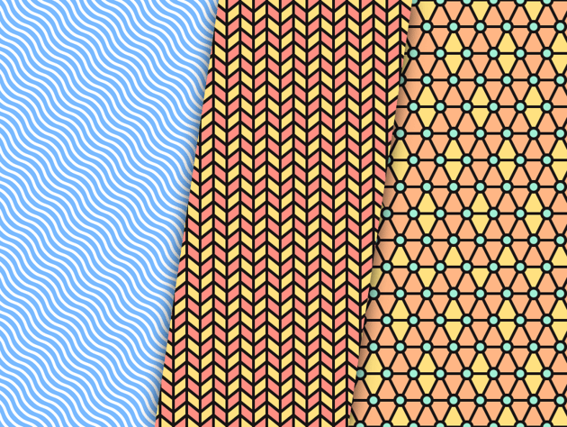
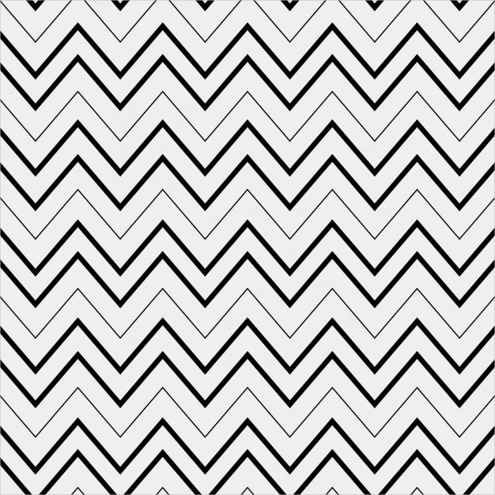

| Pattern | Reason |
|---|---|
| I choose this image because this line have such a perfect position. | |
 |
I pick this image because it different, it have three color and different patterns. |
 |
I pick this image because it remind me of the greater and less signs that begging every tags. |
| I pick this image because Blue is my favorite color.The pattern also combine really good with the color blue. |